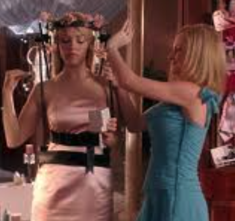

Gretchen Wieners is a key member of the popular clique "The Plastics" at North Shore High School in Mean Girls (2004), serving as Regina George's loyal second-in-command and confidante. She is known for her big hair, symbolizing the many secrets she keeps, as she is the group's primary gossip and knows everyone's private information. Gretchen is characterized by her superficiality, insecurity, and desperate need to maintain her social status by staying close to Regina, often tolerating Regina's manipulative behavior to avoid social exclusion.
Her personality is marked by a mix of gossipy tendencies and a fear of losing her place in the social hierarchy, which leads her to be both a suck-up and a backstabber when threatened. Gretchen's identity is strongly tied to her friendship with Regina, and when that bond weakens, she reveals Regina's secrets to others, showing her pragmatic loyalty to whoever holds power. She is also notable as the only Jewish member of The Plastics, with subtle references to her background and family wealth, including being the heiress to a "Toaster Strudel" fortune.
By the film's end, after Regina's fall, Gretchen adapts by joining a new clique, the "cool Asians," illustrating her primary loyalty to social power and popularity rather than to any individual. Her character embodies the complexities of high school social dynamics—gossip, insecurity, and the struggle for acceptance within a rigid social structure.
Regina George is the main antagonist and the quintessential "queen bee" of North Shore High School in the 2004 film Mean Girls, portrayed by Rachel McAdams. She is the leader of the popular clique known as "The Plastics," enforcing strict social rules and a dress code to maintain her status. Regina is characterized by her manipulative, confident, and socially intelligent nature, using her beauty and cunning to control others and maintain dominance.
Raised in a wealthy family with a permissive "cool mom," Regina grew up spoiled and accustomed to being the center of attention. She is ruthless and often cruel, using gossip, the "Burn Book," and psychological manipulation to undermine rivals and keep her social power. Despite her mean-spirited behavior, she exhibits strong leadership skills, charisma, and an unshakable confidence that make her a magnetic figure in her social environment.
Throughout the film, Regina's control is challenged by Cady Heron, leading to a social power struggle that exposes Regina's insecurities beneath her confident exterior. By the end of the story, after a dramatic fall from grace and a physical injury, Regina shows signs of personal growth, channeling her energy into sports and developing a more respectful relationship with Cady.
Regina George has become a cultural icon representing the "mean girl" archetype, known for her sharp wit, memorable quotes, and complex portrayal of female social dynamics in high school
Karen Smith is a member of the popular clique "The Plastics" at North Shore High School in the 2004 film Mean Girls, portrayed by Amanda Seyfried. She is characterized as dim-witted, easy-going, and flirty, often displaying a naive and sweet personality rather than mean-spiritedness. Karen is known for her comedic moments that truly highlight her ditzy charm. Despite her lack of intelligence, she is well-liked and enjoys having fun with her friends, following the lead of Regina George and Gretchen Wieners without engaging deeply in the group's catty drama. Karen’s role provides comic relief while also representing the archetype of the "nice but clueless" popular girl.